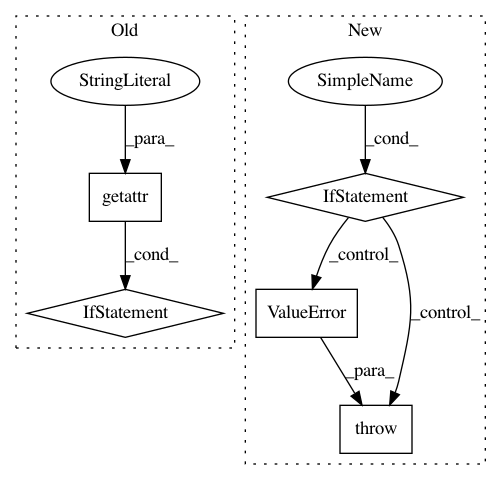

b5ae1c6bde39f5130c975992198f1f8ee5200f9a,tf_agents/policies/categorical_q_policy.py,CategoricalQPolicy,__init__,#CategoricalQPolicy#Any#Any#Any#Any#Any#Any#Any#,43
Before Change
raise TypeError("action_spec must be a BoundedTensorSpec. Got: %s" % (
action_spec,))
num_atoms = getattr(q_network, "num_atoms", None)
if num_atoms is None:
raise ValueError("Expected q_network to have property `num_atoms`, but "
"it doesn\"t. (Note: you likely want to use a "
"CategoricalQNetwork.) Network is: %s" % q_network)
super(CategoricalQPolicy, self).__init__(
time_step_spec,
action_spec,
policy_state_spec=q_network.state_spec,
After Change
raise TypeError("action_spec must be a BoundedTensorSpec. Got: %s" % (
action_spec,))
if action_spec.minimum != 0:
raise ValueError(
"Action specs should have minimum of 0, but saw: {0}. If collecting "
"from a python environment, consider using "
"tf_agents.environments.wrappers.ActionOffsetWrapper."
.format(action_spec))
num_actions = action_spec.maximum - action_spec.minimum + 1
try:
num_atoms = q_network.num_atoms
except AttributeError:
In pattern: SUPERPATTERN
Frequency: 3
Non-data size: 5
Instances
Project Name: tensorflow/agents
Commit Name: b5ae1c6bde39f5130c975992198f1f8ee5200f9a
Time: 2020-06-22
Author: ebrevdo@google.com
File Name: tf_agents/policies/categorical_q_policy.py
Class Name: CategoricalQPolicy
Method Name: __init__
Project Name: brian-team/brian2
Commit Name: 8d60cb0e1b7d501cf774039f55b450e26cceb26b
Time: 2013-05-03
Author: marcel.stimberg@ens.fr
File Name: brian2/stateupdaters/exact.py
Class Name: LinearStateUpdater
Method Name: __call__
Project Name: brian-team/brian2
Commit Name: 1a08386ee50a4798fb08eeaa02fb95f3b7ac6ea0
Time: 2013-07-03
Author: marcel.stimberg@ens.fr
File Name: brian2/stateupdaters/exact.py
Class Name: LinearStateUpdater
Method Name: __call__